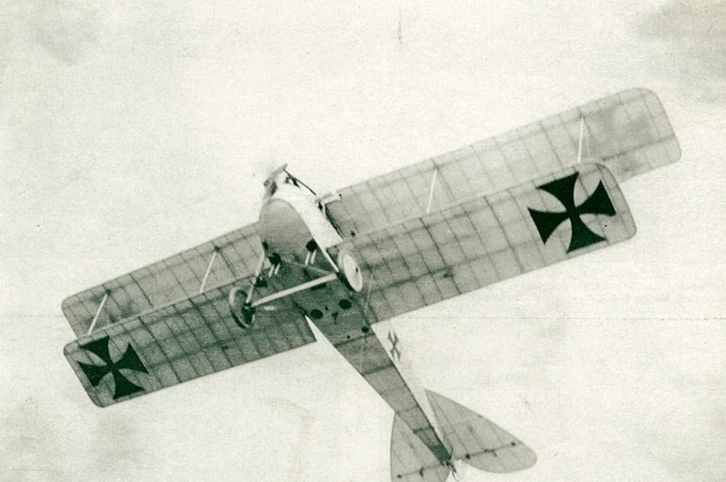
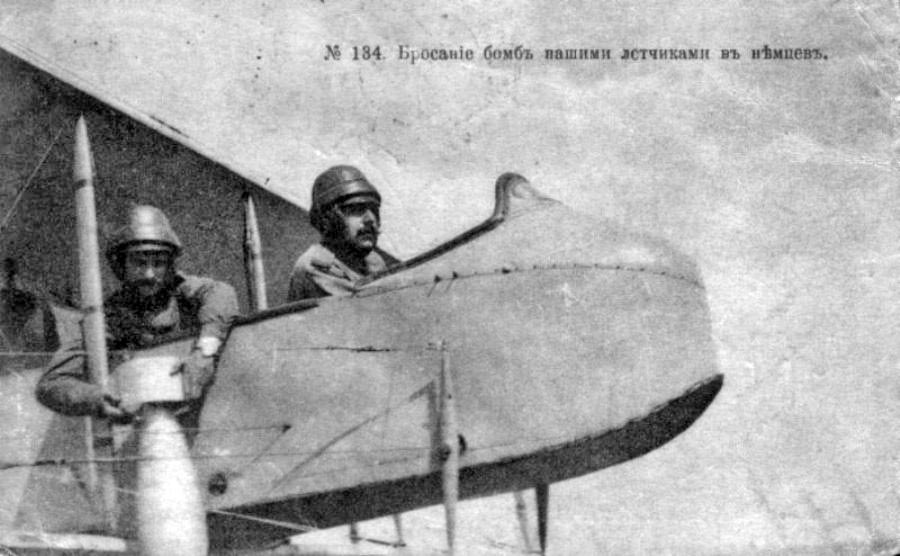
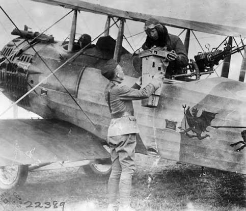

Zeitungsecke · 1916
Убиты бомбой с немецкого аэроплана
Приказ по Семиреченскому казачьему войску №405 за 1916 год исключает из списков войска троих нижних чинов 2-й отдельной сотни, казаков запасного разряда: приказного Михаила Тютявина, Семёна Саломатова и Ивана Васильева из станицы Фольбаумовской. Все трое убиты 15 июля бомбой, сброшенной с немецкого аэроплана. Заканчивается приказ строкой «Честь и слава дорогим Семиреченцам».

Германский биплан в полёте, вид снизу. На крыле и фюзеляже чёрные кресты, опознавательные знаки германской авиации Первой мировой. Такая машина и сбросила бомбу 15 июля 1916 года. Снимок 1910-х годов, фотограф неизвестен; правый нижний угол обрезан, там стоял водяной знак стороннего сайта.

«Приказы по Семиреченскому казачьему войску», 1916 г. Приказ №405.
№ 405-й.
Убитые 15 іюля сего года сброшенной съ нѣмецкаго аэроплана бомбой нижніе чины 2-й отдѣльной сотни изъ казаковъ запаснаго разряда: приказный Михаилъ Тютявинъ, казаки: Семенъ Саломатовъ и Иванъ Васильевъ (станицы Фольбаумовской) исключаются изъ списковъ войска.
Честь и слава дорогимъ Семирѣченцамъ, истиннымъ сынамъ ЦАРЯ и РОДИНЫ.
Что это за приказ
Станица Фольбаумовская названа по имени Михаила Александровича Фольбаума, военного губернатора Семиреченской области и наказного атамана Семиреченского казачьего войска. Формулировка «исключаются из списков войска», это стандартный порядок для погибших: приказ не сообщает подробностей боя, он закрывает казаку служебное дело.
Дата гибели, 15 июля 1916 года, и «сброшенная с немецкого аэроплана бомба» указывают на Западный фронт Первой мировой войны, а не на события в Семиречье: сотни запасного разряда уходили на фронт из области. Семиреченское восстание того же лета начнётся позже, во второй половине июля.
Из троих названных к нашим местам относится один: Тютявин, род с выселка Чунджинского, он есть в справочнике родов Голубевской. Иван Васильев в приказе прямо назван казаком станицы Фольбаумовской, то есть это однофамилец борохудзирских Васильевых, и связывать его с ними мы не стали. Саломатовых в метриках по Борохудзиру пока нет вовсе.
Как это выглядело
Снимки на этой странице, это не одна и та же сторона: бомбы с аэропланов в 1916 году бросали все воюющие армии, и приём был один и тот же, руками, из открытой кабины. Специально снятых фотографий той самой бомбардировки 15 июля не существует, здесь показано, как подобное делалось вообще.

Русская открытка № 184 с печатной подписью «Бросаніе бомбъ нашими лѣтчиками въ нѣмцевъ». Наблюдатель держит авиабомбу со стабилизатором: её сбрасывали через борт вручную.

Союзническая авиация, снимок конца войны: солдат подаёт бомбу наблюдателю в заднюю кабину, рядом турельный пулемёт, на борту эмблема с летучей мышью. В левом нижнем углу номер «22389», по виду инвентарный номер фотоархива; учреждение не установлено.
Источник текста: «Приказы по Семиреченскому казачьему войску», 1916 год, приказ №405.
Иллюстрации, это фотографии 1910-х годов из открытых собраний, к самому приказу отношения не имеют и показывают технику и приём бомбометания той войны. Если вы знаете точное происхождение любого из трёх снимков, напишите, поставим атрибуцию.